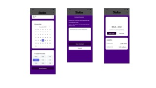

Stellae - UI/UX Design & Prototype
A UI/UX design project focused on developing a clean and user-friendly digital platform that connects users with verified service providers. The project emphasises usability, accessibility, and modern interface design.
The Challenge
The challenge was to design a digital platform that is both intuitive and visually engaging, while ensuring users can easily navigate and access services. The interface needed to balance functionality with simplicity, making it accessible to a wide range of users.
The Solution
To address this, I designed a clean and structured interface using a minimalist approach. The layout focused on clear navigation, consistent visual elements, and logical user flow. I developed the prototype in Figma, creating interactive screens to simulate user interaction and improve usability. The design prioritised clarity, accessibility, and a modern aesthetic.
Project Gallery
Brand Applications



The Outcome
The final outcome was a fully interactive prototype that demonstrates a clear and structured user interface. The project successfully highlights effective UI/UX principles, including usability, consistency, and logical navigation. It also demonstrates my ability to translate design concepts into functional digital experiences.